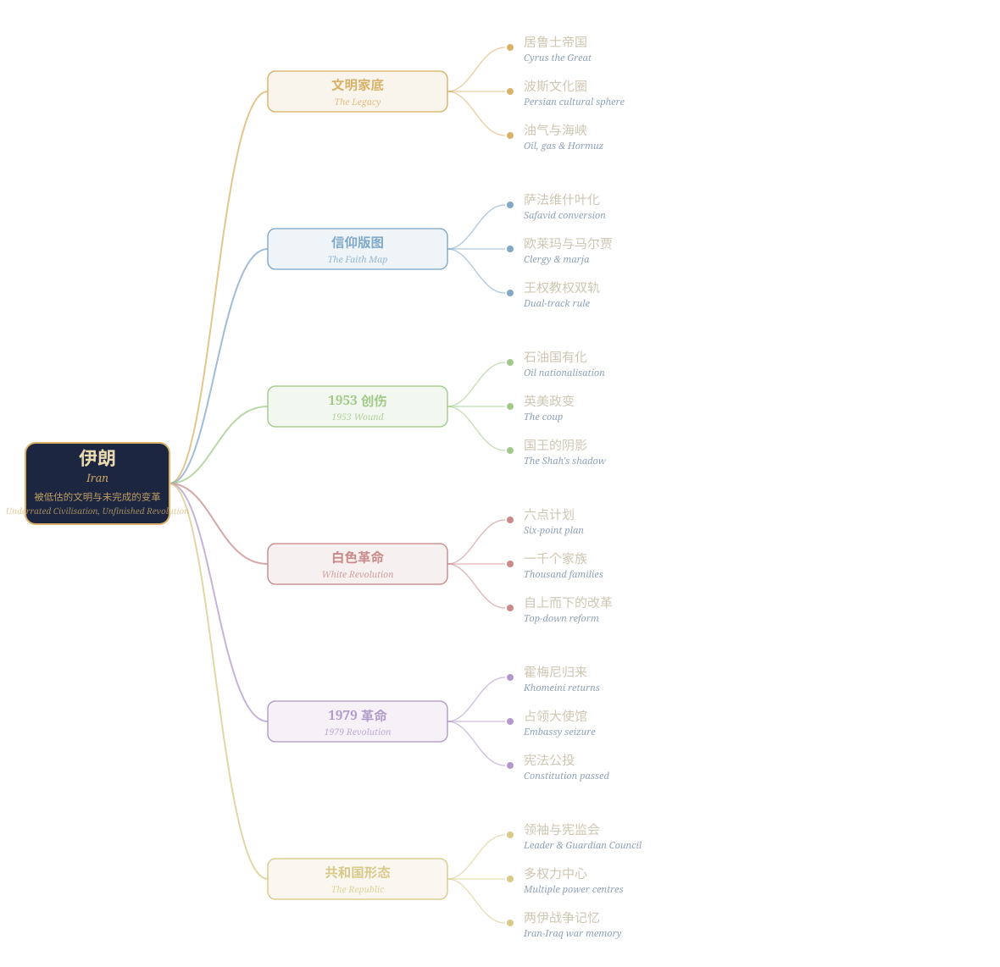

伊朗：被低估的文明与未完成的变革
〇 · 书籍信息
基本信息
| 书名 | 《伊朗：被低估的文明与未完成的变革》——一本以问题推进的国家史：从居鲁士大帝到鲁哈尼，从萨法维的什叶化到 1979 年革命，每个章节都是一组「为什么」 |
|---|---|
| 作者 | 迈克尔·阿克斯沃西：英国外交官出身（曾在英国外交部负责伊朗事务）、埃克塞特大学波斯与伊朗研究中心主任——写政策分析的人来写历史，每一问都问在西方读者最容易误解的地方 |
| 结构 | 六章：古代伊朗和伊斯兰化的伊朗 → 萨法维王朝 → 巴列维王朝 → 1979 年革命 → 两伊战争与战后改革 → 艾哈迈迪内贾德、鲁哈尼——一条主线：伊朗为什么「既伟大又苦难」 |
| 立场 | 中译本序的定调：「伊朗既不『邪恶』也不『神秘』。战略地位重要，地大物博，文化底蕴深厚」——反对妖魔化，也不美化：用史料与结构回答「革命为什么会发生」 |
| 一句话 | 理解伊朗的钥匙是 1953 年与 1979 年两个年份：石油国有化被推翻的创伤，让政教合一看上去像「人民的选择」——这是一个被 20 世纪反复塑造的古老文明。 |
一 · 核心主题总览
这本书里的四组母题：① 被低估的文明
序言先摆家底：「早在 2500 年前波斯人就建立了人类历史上第一个超级大国」——西起希腊、南至埃及、东至旁遮普；至今中东只有波斯语和希伯来语是 2500 年来延续至今的语言；今天的伊朗是世界第四大产油国、第二大天然气储量国，国土 164.5 万平方千米、相当于 4 个伊拉克——这些数字与「妖魔化」标签之间的落差，正是书名「被低估」的含义。
② 1953 年的创伤
摩萨台的倒台被作者称为「伊朗在整个 20 世纪政治生活中的一个核心事件」：1951 年石油国有化广受欢迎却令英国深恶痛绝，1953 年英美情报机构策划政变成功——「尽管多年来从未有文件披露英国和美国介入摩萨台的倒台，但大多数伊朗人很快就认为外国势力在摩萨台倒台和恢复王权的过程中起到了关键性作用」——「很多伊朗人相信，国王从未真正摆脱 1953 年的阴影」，这颗种子在 26 年后长成 1979 年革命。
③ 政教合一的由来
萨法维王朝 16 世纪把伊朗转为什叶派国家，为国家与教士的结盟铺了四百年地基；而 1979 年宪法的独特在于它试图同时迎合两种理念：伊斯兰政府理念与人民主权理念——「伊斯兰原则在宪法文本中占据主导地位」，领袖有权任命武装部队指挥官和司法体系领导官员，总统与议会的候选人须经宪法监护委员会批准——民主的「元素」存在，但解释权归教士。
④ 反美叙事的自证
人质危机是被作者拆解得最细的一环：1979 年 10 月 22 日卡特同意国王入境就医，学生占领美国大使馆，「霍梅尼如愿以偿地得到了想要的一切」——人质事件成为核心议题，「任何反对占领大使馆的声音都会被理解成与革命的敌人有关联」——新宪法以压倒性优势通过：革命通过制造敌人完成了自我巩固，而美国 1953 年的旧账，为这套叙事提供了最好的燃料。
二 · 第一段 古代与萨法维 —— 什叶派是如何落地的—— 居鲁士 · 一个王朝的信仰选择 ——
波斯帝国的家底
第一部分回答「伊朗为什么重要」：居鲁士大帝的阿契美尼德王朝是人类历史上第一个超级大国；帕提亚与萨珊接棒王权传统，与罗马对峙数百年；651 年萨珊亡于阿拉伯征服——「为何穆斯林迅速征服伊朗」被写成军事、宗教与社会结构的多因答案，而非简单的武力碾压。作者特别提醒读者：波斯语、诗歌与行政传统并未被阿拉伯化冲掉——今天伊朗人引以为傲的文化认同，是「伊斯兰的信仰 + 波斯的文明」的双层结构。
◆ 语言学习 · 概念 · 波斯文化圈
| 阿契美尼德王朝 | 居鲁士大帝建立的第一个超级大国 |
|---|---|
| 萨珊王朝 | 前伊斯兰时代的最后帝国——波斯古典文明的顶点 |
| 伊斯兰化 | 信仰的改变 ≠ 文明的湮灭：波斯语与文化延续 |
| 双层认同 | 伊斯兰信仰 + 波斯文明——今日伊朗的精神结构 |
句型 ｜ 伊朗的历史既伟大又苦难。——中译本序的定调句：伟大在前（2500 年帝国史），苦难在后（被妖魔化的当代）——这本书的全部努力，是把这两段接起来讲。
萨法维的转向
「伊朗何时何故转为什叶派国家」是全书的关键一问：答案是 16 世纪的萨法维王朝——以什叶派为国教，自上而下推行数百年，把伊朗与奥斯曼（逊尼派）世界隔开——今天的教派版图，是一次王朝决策的遗产。这一转向的深远在于：什叶派的教士阶层（欧莱玛）与乌苏勒学派获得了参与国家的制度入口，「马尔贾」庇护制度让宗教权威成为王权之外的另一极——王权与教权的双轨，从萨法维一直铺到巴列维与 1979。
◆ 语言学习 · 概念 · 什叶化
| 萨法维王朝 | 16 世纪立什叶派为国教——教派版图的塑造者 |
|---|---|
| 欧莱玛 | 教士阶层：伊朗政治里王权之外的另一极 |
| 马尔贾 | 什叶派最高宗教权威——信徒效仿的对象 |
| 王朝决策 | 信仰版图的由来：不是教义的自然传播，是政治选择 |
习语 ｜ 理解伊朗要先理解萨法维。——作者的潜台词：今天的「教士之国」不是 1979 年一夜创造的——它有一个四百年的制度地基：读不懂 16 世纪，就读不懂 1979。
三 · 第二段 巴列维 —— 石油、政变与白色革命—— 1953 · 国王的双面 ——
摩萨台与 1953
第三部分的核心问答「首相摩萨台为何在 1953 年被夺权」：摩萨台出身贵族、留学法瑞，1951 年 4 月出任首相，5 月 1 日国王批准石油国有化法案——「石油国有化的政策在伊朗国内广受欢迎，但却令英国政府深恶痛绝」；英国封锁石油出口、游说美国，1953 年 8 月两次政变后摩萨台被推翻、国王回国开启高压统治。作者的历史判词克制而锋利：1953 年政变沉重打击了伊朗的国内自由和民主政治，「使得人们对于外国政府干涉伊朗内政这一原本就根深蒂固的愤恨再次加深」——反美叙事的原点，不在德黑兰，在伦敦与华盛顿。
◆ 语言学习 · 概念 · 石油政治
| 石油国有化 | 1951 年法案：民族主义的巅峰时刻 |
|---|---|
| 1953 年政变 | 英美情报机构推翻民选首相——伊朗现代史的转折点 |
| 外国干涉愤恨 | 反美情绪的历史地基：先有 1953，后有 1979 |
| 国王的阴影 | 「国王从未真正摆脱 1953 年的阴影」——王权的合法性赤字 |
句型 ｜ 「摩萨台的倒台算得上伊朗在整个 20 世纪政治生活中的一个核心事件。」——作者把一个年份升格为世纪事件：对伊朗人来说它因人而异（左派、君主派、宗教派各有各的解读），但对所有伊朗人共同的结论只有一条：外国人可以决定德黑兰的命运。
白色革命
「何为白色革命」：1962 年新《土地改革法案》作为「白色革命」六点计划之一，1963 年 1 月全民公投通过——其他五点包括国有工厂私有化、森林国有化、妇女选举权、工人利益分成、文教队下乡——「『白色革命』一词反映出国王希望通过改善人民物质生活条件从而抢占先机以避免一场马克思主义革命，或者红色革命」。但作者指出它的两面性：土地改革的真正目标是「在农民中产生一群忠于王室的支持者」并催生产业工人；而改革触动教士与地主利益、将农村人口推向城市——1979 年革命的主力，恰恰来自这场「自上而下的革命」制造的城市边缘人群。
◆ 语言学习 · 概念 · 白色革命
| 白色革命 | 国王的现代化纲领：以「白」对「红」——抢先防火 |
|---|---|
| 六点计划 | 土改、私有化、森林国有、妇女选举权、利益分成、文教队 |
| 一千个家族 | 旧土地制度的既得利益者——改革的对象 |
| 自上而下的革命 | 没有社会动员的改革：制造了新的不满 |
习语 ｜ 一场源自上层的革命。——作者对白色革命的判词：革命一词被国王征用，但改革没有群众基础——「对于行将就木的伊朗政治几乎没有作出任何改变」：现代化可以做加法，做不了合法性的乘法。
四 · 第三段 1979 年革命 —— 霍梅尼与人质—— 完美的人 · 使馆的 444 天 ——
霍梅尼是谁
第四部分从生平切入：鲁霍拉·穆萨维·霍梅尼 1902 年 9 月生于霍梅恩，宗教世家、幼年失怙，先后在斯尔坦纳巴德和库姆接受训练——「从一开始，霍梅尼对宗教学习的兴趣点就与欧莱玛的经典规范格格不入」：他痴迷神秘主义哲学与诗学，研读苏菲派伊本·阿拉比的「完美的人」（al-Insan al-Kamil）——一位精通哲学诗学的教士，日后却成了革命领袖。他反对欧莱玛远离世俗的正统观点，主张教士直接参政——从反对国王的流亡者，到 1979 年万众欢呼的归来者：1979 年 1 月 16 日，国王离开伊朗；2 月 1 日，霍梅尼凯旋。
◆ 语言学习 · 概念 · 革命领袖
| 霍梅恩 | 1902 年的出生地——小镇走出的最高领袖 |
|---|---|
| 完美的人 | 伊本·阿拉比的神秘主义概念：霍梅尼的精神底色 |
| 教士参政 | 对欧莱玛正统的偏离：从避世到夺权 |
| 凯旋 | 1979 年 2 月 1 日回德黑兰——流亡者的加冕 |
句型 ｜ 「从一开始，霍梅尼对宗教学习的兴趣点就与欧莱玛的经典规范格格不入。」——作者提醒读者别把革命领袖脸谱化：塑造历史的往往是「体系内的异类」——他不是体制的产物，是体制的反叛者，但用的是体制的语言。
占领大使馆
「伊朗人为何在 1979 年 11 月占领美国大使馆」被写成一场政治算术：新宪法草案将赋予霍梅尼比国王更大的权力，自由派与温和派正酝酿联合反对；10 月 22 日卡特同意国王入境就医，11 月 1 日巴扎尔甘还在阿尔及尔会见布热津斯基——革命者把这解读成「1953 年重演」的预告，学生占领使馆「先发制人」。结果是一次完美的政治清洗：「通过支持学生占领美国大使馆的举动，霍梅尼成功达到预期目的，即在削弱反对派的同时，再次激化革命」——反对新宪法的同盟被彻底粉碎，12 月初新宪法以压倒性优势通过；13 名人质获释，其余被扣 444 天。
◆ 语言学习 · 概念 · 危机政治
| 先发制人 | 占领使馆的动机：防备「1953 年重演」 |
|---|---|
| 革命的敌人 | 反对派被贴的标签：人质事件完成划线 |
| 444 天 | 人质危机时长——美伊断交的起点 |
| 政治算术 | 每次危机都有人算清了账：谁得利，谁推动 |
句型 ｜ 「霍梅尼如愿以偿地得到了想要的一切。」——全书最冷静的一句判词：一场看似失控的学生冲动，在作者笔下是一笔算得干干净净的政治账——判断政治事件，先看谁受益。
五 · 第四段 战争与共和国 —— 两伊、宪法与今天—— 一战式战场 · 多权力中心 ——
两伊战争
「两伊战争缘何持续多年」：1980 年 9 月萨达姆先发制人入侵；双方都进口重装备却舍不得消耗，战争退回「以战壕、机枪、迫击炮、地雷和铁丝网为主要作战武器的第一次世界大战时期的欧洲战场」；伊拉克大量使用化学武器，「给伊朗方面造成了大约超过 5 万人的伤亡。到了战争中期，伊朗方面本有能力使用同样方法进行报复，但是他们从没有这么做」。战争的尾声充满屈辱：1988 年 7 月美军「文森斯」号击落伊朗民航客机致 290 人死亡；革命卫队指挥官雷扎伊在报告里承认「五年之内看不到胜利的希望」——伊朗高层确认「他们不仅仅在和伊拉克作战，更是在同全世界作战」：1988 年 8 月，霍梅尼饮下「毒药」接受停火。
◆ 语言学习 · 概念 · 现代战争
| 一战式战场 | 进口装备的停滞：堑壕与化学武器重现 |
|---|---|
| 没有报复 | 伊朗未以化武还化武——值得记录的克制 |
| 文森斯号 | 1988 年击落 290 人的民航机——误判还是故意 |
| 毒药 | 霍梅尼对停火的比喻：比战败更苦的清醒 |
句型 ｜ 「他们不仅仅在和伊拉克作战，更是在同全世界作战。」——伊朗的战争记忆定型于此：孤立感是伊朗政治心理的持久底色——理解今天伊朗的核谈判姿态，要回到这八年的围困感。
谁在掌管伊朗
压轴之问「哈梅内伊是不是独裁者」得到一个非教科书式的回答：「尽管领袖拥有绝对权力，但是国家体系却并没有按照独裁制度运转，甚至在霍梅尼时期也没有」——重要决策经集体讨论，最高国家安全委员会容纳总统与各军种指挥官；但另一面同样真实：「每当总统试图抗衡最高领袖，或者试图分割部分权力时，最高领袖最终总能将其挫败」。作者的最终描述带有观察者的诚实：「革命卫队、总统、情报部门、军队、最高领袖、宪法监护委员会相互角力又各自为政」——伊朗不是铁板一块的独裁，是多个权力中心的混乱角力；2015 年 7 月 14 日伊核协议在维也纳达成，2016 年 1 月制裁取消——「未完成的变革」，止笔于此。
◆ 语言学习 · 概念 · 神权共和
| 领袖（rahbar） | 宪法称谓：最高权力的实际持有者 |
|---|---|
| 宪法监护委员会 | 12 人把关选举——民主元素的过滤网 |
| 相互角力 | 权力中心模型：比「独裁」更准确的描述 |
| 伊核协议 | 2015 年维也纳——开放的顶点与本书的终点 |
习语 ｜ 既不独裁，也非民主。——作者对伊朗政体的双重否定：用西方分类学读伊朗永远错位——它的体系是「伊斯兰原则主导下的共和外观」：候选人可以被筛掉，但内部仍有派系竞争——这正是「未完成的变革」的制度含义。
六 · 人物图鉴与成长弧线—— 主角配角 · 一张表看穿 ——
主要人物
霍梅尼——1979 年革命的领袖——神秘主义出身的教士、体制的异类：从流亡者到「完美的人」，宪法里的「领袖」——政教合一体制的总设计师
摩萨台——石油国有化的首相——1953 年被英美政变推翻：伊朗现代史的转折点与反美叙事的原点，被圈禁在家直至 1967 年逝世
巴列维国王——白色革命的推动者——现代化的加法做得漂亮，合法性的乘法做不出来：1979 年 1 月 16 日离开伊朗，再未回来
阿克斯沃西——英国外交官出身的史家——用问答体拆解妖魔化：每一问都问在偏见最深的地方，每一答都给出结构而非情绪
次要人物（功能位）
| 萨法维王朝 | 16 世纪的信仰决策者——立什叶派为国教：今天教派版图的四百年前源头 |
|---|---|
| 居鲁士大帝 | 第一个超级大国的建立者——「被低估的文明」的证据链起点 |
| 萨达姆 | 两伊战争的发动者——1980 年 9 月先发制人：八年战争的另一半责任方 |
| 哈梅内伊 | 现任最高领袖——「是不是独裁者」的提问对象：多权力中心角力的枢纽 |
七 · 主题与象征—— 每个道具都在说话 ——
| 1953 ↔ 1979 | 政变与革命的因果对偶——创伤没有被解决，只是被推迟了 26 年 |
|---|---|
| 白色 ↔ 红色 | 国王的改革竞赛——用现代化防赤化：结果两头落空 |
| 霍尔木兹 ↔ 咽喉 | 海峡的地理隐喻——伊朗的地缘价值写在地图上：被低估，不是不重要 |
| 双轨 ↔ 王权教权 | 萨法维的制度遗产——两根轨一直铺到 1979：宪法只是给旧双轨换了车头 |
| 毒药 ↔ 停火 | 霍梅尼的比喻——认清现实的那一刻，比战败更苦——但认清是唯一的出路 |
八 · 写作手法赏析—— 怎么写，就能怎么学 ——
① 问答体结构
每节一个问题——把国家史拆成可检索的问答：妖魔化最怕的不是辩护，是具体
② 双面平衡
既反妖魔化也不美化——写人质危机的受益者分析、写化武克制的记录：立场的表现是克制
③ 年份锚点法
1953 与 1979 两个年份——用少数锚点组织百年叙事：记忆的最小单元是年份
④ 受益者分析法
「谁得利，谁推动」——把阴谋论翻译成政治算术：无需神秘动机，利益结构自会说话
⑤ 数字证物
164.5 万平方千米、第四大产油国——用可核查的数字对抗标签：数据是最短的祛魅路径
九 · 名段欣赏—— 原文精读 · 逐段赏析 ——
十 · 金句摘录—— 14 条 · 中英对照 · 带出处 ——
"伊朗的伊斯兰革命在中东乃至世界创建了独一无二的政教合一的政体模式。"—— 中译本序
"其实，伊朗既不「邪恶」，也不「神秘」。战略地位重要，地大物博，文化底蕴深厚。"—— 中译本序
"早在 2500 年前波斯人就建立了人类历史上第一个超级大国。"—— 中译本序
"石油国有化的政策在伊朗国内广受欢迎，但却令英国政府深恶痛绝。"—— 第3章
"摩萨台的倒台算得上伊朗在整个 20 世纪政治生活中的一个核心事件。"—— 第3章
"很多伊朗人相信，国王从未真正摆脱 1953 年的阴影。"—— 第3章
"「白色革命」一词反映出国王希望通过改善人民物质生活条件从而抢占先机以避免一场马克思主义革命。"—— 第3章
"从一开始，霍梅尼对宗教学习的兴趣点就与欧莱玛的经典规范格格不入。"—— 第4章
"我们拥有的武器不仅能够反抗更能够击败无比强大的美国，那个自以为能将伊朗捏在手心里的美国。"—— 第4章 · 霍尼亚
"霍梅尼如愿以偿地得到了想要的一切。"—— 第4章
"伊拉克方面大量使用化学武器给伊朗方面造成了大约超过 5 万人的伤亡。到了战争中期，伊朗方面本有能力使用同样方法进行报复，但是他们从没有这么做。"—— 第5章
"他们不仅仅在和伊拉克作战，更是在同全世界作战。"—— 第5章
"尽管领袖拥有绝对权力，但是国家体系却并没有按照独裁制度运转。"—— 第6章
"革命卫队、总统、情报部门、军队、最高领袖、宪法监护委员会相互角力又各自为政。"—— 第6章
十一 · 拓展阅读—— 原文 · 词条 · 译文 ——
十二 · 个人感悟与心得—— 三点心得 ——
三点感悟
① 祛魅从问具体的问题开始
问答体的启示：对任何被标签化的对象，「具体」是最好的解药——不问「伊朗是不是邪恶」，问「1953 年发生了什么」——问题一具体，偏见就无处安放。
② 创伤会自己找出口
1953 → 1979 的因果链：一个民族的历史创伤不会消失，只会在下一个转折点放大——处理国际关系与处理人际关系同理：被压下的委屈，最终以更大的音量回来。
③ 看政治先看受益者
人质危机的算术：判断一场混乱是失控还是工具，只看一个问题——混乱结束后谁得利了？这一分析法对职场、市场与新闻同样有效。
读完这本问答体，最深的印象不是任何一方的对错，而是「复杂性」本身：伊朗不是新闻标题里的一个词，是 2500 年文明、1953 年创伤、1979 年革命与四百年教俗双轨的叠加态——书名说的「未完成的变革」，大概也是所有古老文明共同的处境：变革永远在进行时。
十三 · 一页速查（复习用）
| 被低估 | 2500 年文明 + 世界第四大产油国：标签与家底的落差 |
|---|---|
| 1953 创伤 | 石油国有化被政变推翻：反美叙事的原点与王权的死结 |
| 1979 革命 | 霍梅尼归来与人质危机：革命通过制造敌人完成巩固 |
| 两伊战争 | 一战式战场与化武克制：「同全世界作战」的孤立感 |
| 神权共和 | 多权力中心角力：既不独裁也非民主的第三种形态 |
十四 · 全书思维导图—— 一图纵览 ——

一图纵览全书骨架 · 中英双语对照 · 手机端可左右滑动查看全图